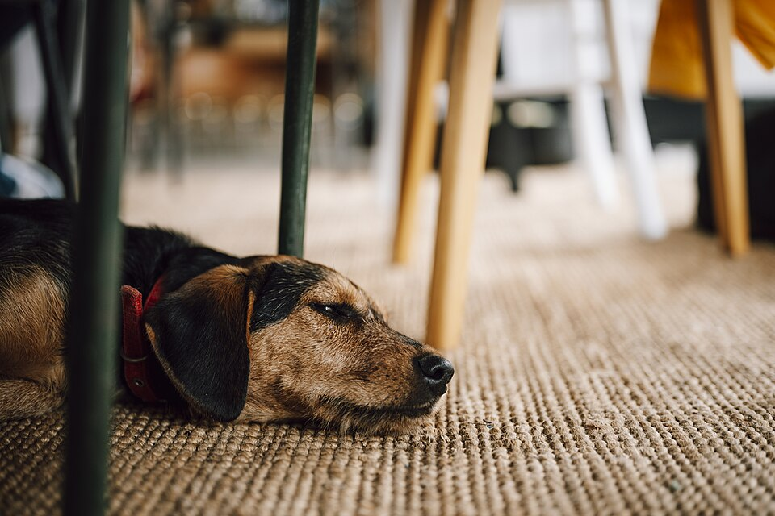

Ein Hund im Büro kann gut sein. Aber nur, wenn der Arbeitsplatz nicht nur für Menschen angenehmer wird, sondern auch für den Hund fair bleibt.
Rückzugklare RegelnStress sehen

Kurz gesagt
Ein Bürohund ist keine Deko, kein Pausenclown und kein Stimmungsmacher für alle.
Der Hund braucht einen festen, ruhigen Rückzugsort, frisches Wasser und geplante Pausen.
Kolleginnen, Kollegen und Besucher müssen klare Regeln kennen: nicht ungefragt anfassen, rufen oder füttern.
Genehmigung, Angst, Allergien, Hygiene, Sicherheit und hundefreie Bereiche gehören vorab geklärt.
Nicht jeder Hund ist für Büroalltag geeignet. Stillhalten ist nicht automatisch Entspannung.
Eine offene Box kann Rückzug sein. Eine über Stunden geschlossene Box ist keine gute Lösung.
Die richtige Frage ist nicht: Finden wir es schön?
Der Aktionstag „Kollege Hund“ macht sichtbar, dass Hunde am Arbeitsplatz für Menschen viel Gutes tun können: Sie bringen Bewegung in Pausen, machen Begegnungen weicher und können das Büroklima verbessern. Das ist aber nur die menschliche Seite.
Für den Hund zählt eine andere Frage: Kann er dort schlafen, sich entziehen, sicher sein und in seinem Tempo durch den Tag kommen? Wenn er dauernd angeschaut, gerufen, gestreichelt oder herumgeführt wird, ist das kein guter Arbeitstag. Dann arbeitet der Hund mit, obwohl niemand ihn bezahlt hat.
Ein Bürohund braucht keinen Applaus.
Er braucht Ruhe, Rückzug und Menschen, die akzeptieren, dass ein Hund nicht den ganzen Tag verfügbar sein muss.
Fünf Fragen, bevor ein Hund mit ins Büro kommt
Kann der Hund wirklich schlafen? Nicht nur kurz dösen, sondern länger ungestört ruhen. Wenn ständig jemand vorbeigeht, ihn anspricht oder über ihn steigt, ist der Platz falsch.
Hat er einen festen Rückzugsort? Nicht mitten im Laufweg, nicht neben der Kaffeemaschine, nicht in der Sonne, nicht im Durchzug. Der Hund muss dort freiwillig hingehen und wieder herausgehen können.
Darf er Nein sagen? Ein Hund muss nicht von allen angefasst werden. Wegdrehen, ausweichen, gähnen, Lecken über die Lefzen oder Verstecken sind Signale, die ernst genommen werden müssen.
Gibt es klare Regeln? Wer führt ihn raus? Wer darf füttern? Was passiert bei Besuch, Feueralarm, Meetings, Krankheit, Läufigkeit, Angst oder Konflikten mit anderen Hunden?
Passt Büro überhaupt zu diesem Hund? Manche Hunde lieben ruhige Begleitung. Andere sind schnell überfordert, unsicher, wachsam, reizoffen oder kommen in fremder Umgebung nicht herunter.
RuheDer Hund kann länger schlafen, ohne dauernd angesprochen oder berührt zu werden.
RückzugSein Platz liegt geschützt und ist freiwillig erreichbar, nicht bloß eine geschlossene Box.
RegelnAlle Menschen wissen, was erlaubt ist: nicht füttern, nicht locken, nicht ungefragt anfassen.
Nicht nur Hundesache: Der Arbeitsplatz muss zustimmen
Ein Bürohund ist keine private Einzelentscheidung. Arbeitgeber, direkte Kolleginnen und Kollegen und je nach Betrieb auch Hausordnung, Arbeitsschutz, Hygiene, Besucherbereiche und Fluchtwege müssen mitgedacht werden. Ein Hund darf nicht einfach mitgebracht werden, nur weil er zu Hause lieb ist.
Sauber geregelt werden sollten mindestens: wer verantwortlich ist, welche Bereiche hundefrei bleiben, wie mit Allergien oder Angst umgegangen wird, ob eine Hundehaftpflicht besteht, was bei Feueralarm, Besuch, Krankheit, Läufigkeit oder Konflikten passiert und wann die Erlaubnis wieder endet.
Langsam anfangen statt ganzen Tag ausprobieren
Ein guter Einstieg ist keine Acht-Stunden-Probe. Besser ist ein kurzer, ruhiger Test mit klarer Betreuung und danach ein ehrlicher Blick: Konnte der Hund schlafen, trinken, sich lösen, Abstand nehmen und nach dem Bürotag normal herunterfahren? Erst wenn das mehrfach trägt, wird aus Mitkommen Alltag.
Ein guter Büroplatz sieht langweilig aus
Für Menschen wirkt ein guter Bürohund oft fast unspektakulär: Er liegt auf seiner Decke, trinkt, geht in Pausen raus und wird sonst in Ruhe gelassen. Genau das ist der Punkt. Je mehr der Hund Attraktion ist, desto eher wird aus Mitnahme eine Belastung.
Der Platz sollte ruhig, zugfrei, nicht zu warm, nicht im Durchgang und nicht direkt an Türen, Druckern oder lauten Geräten liegen. Wasser muss erreichbar sein. Kabel, Pflanzen, Papierkörbe, Reinigungsmittel und Futterreste gehören außer Reichweite.
Box, Decke, Körbchen: Rückzug heißt freiwillig
Eine offene Box, Decke oder ein Körbchen kann dem Hund Sicherheit geben, wenn sie wirklich sein Bereich ist. Problematisch wird es, wenn die Box verschlossen wird und den Bewegungsradius über längere Zeit ersetzt. Dann ist das kein Rückzugsort mehr, sondern Unterbringung.
Wenn ein Hund im Büro nur funktioniert, weil er eingesperrt wird, passt der Büroalltag nicht. Dann braucht es eine andere Lösung: Homeoffice, Betreuung, Hundesitter, kürzere Bürotage oder die ehrliche Entscheidung, ihn an bestimmten Tagen nicht mitzunehmen.
Regeln für Menschen
Die wichtigste Bürohund-Regel betrifft nicht den Hund, sondern die Menschen. Alle müssen wissen, was erlaubt ist und was nicht.
Nicht ungefragt anfassen, hochnehmen, rufen oder locken.
Nicht füttern, auch keine kleinen Reste.
Den Ruheplatz nicht betreten und nicht als Gesprächsecke nutzen.
Besucher vorher informieren und Abstand ermöglichen.
Allergien, Angst vor Hunden und hundefreie Bereiche respektieren.
Eine verantwortliche Betreuungsperson benennen, auch für kurze Abwesenheiten.
Warnzeichen: Wenn „brav“ eigentlich Stress ist
Viele Hunde eskalieren nicht laut. Sie halten aus. Darum muss man genau hinsehen. Warnzeichen können sein: hecheln ohne Hitze oder Bewegung, Zittern, ständiges Gähnen, Lefzenlecken, Wegdrehen, Verstecken, Jaulen, Bellen, Herumlaufen, Futterverweigerung oder ein Hund, der den ganzen Tag nicht richtig schläft.
Ein einzelnes Signal beweist noch keinen Stress. Der Zusammenhang zählt. Auch das Gegenteil kann täuschen: Ein Hund, der stundenlang reglos liegt, ist nicht automatisch entspannt. Entscheidend ist, ob er freiwillig ruht, sich lösen kann, trinkt, normal frisst und nach dem Bürotag nicht völlig überdreht oder erschöpft ist.
Wann der Hund besser nicht mitkommt
Bei langen Meetings, in denen niemand verantwortlich auf ihn achten kann.
Bei viel Besuch, Lärm, Umbau, Hitze oder sehr engen Räumen.
Wenn der Hund krank, stark verunsichert, läufig oder mit der Umgebung überfordert ist.
Wenn andere Menschen im Team Angst, Allergien oder berechtigte Sicherheitsbedenken haben.
Wenn der Hund auf dem Betriebsgelände im Auto warten müsste. Das ist keine Option.
Der ehrliche Maßstab
Ein Bürohund ist dann gut gelöst, wenn der Hund am Ende des Tages nicht nur „nichts kaputt gemacht“ hat, sondern sichtbar sicher, ruhig und betreut war. Wenn alle ihn süß fanden, aber er nicht schlafen konnte, war es kein guter Tag für den Hund.
Wenn du gerade über einen Hund nachdenkst, prüfe zuerst die Grundbedingungen auf der Seite Hunde. Wenn ein Hund noch gar nicht eingezogen ist, hilft der Haustier-Selbsttest bei der ehrlichen Entscheidung.
Kurz beantwortet
Häufige Fragen
Ist ein Hund im Büro automatisch besser als Alleinbleiben?
Nein. Ein Büro kann eine gute Lösung sein, wenn der Hund dort wirklich zur Ruhe kommt, betreut wird und einen geschützten Platz hat. Ist er dauerhaft gestresst, ist eine andere Betreuung fairer.
Darf ein Bürohund in einer Box liegen?
Als freiwilliger, offener Rückzugsort kann eine Box sinnvoll sein. Als geschlossene Aufbewahrung über Stunden ist sie kein fairer Büroalltag und kann tierschutzrechtlich problematisch sein.
Quellen und Prüfstand
Worauf diese Seite ihre Aussagen stützt
Kernfakten
Ein Bürohund profitiert nur, wenn der Arbeitsplatz hundegerecht organisiert ist und der Hund dort tatsächlich entspannen kann.
Rückzugsort, frisches Wasser, geplante Pausen, Aufsicht und klare Regeln für Kolleginnen und Kollegen sind Grundbedingungen.
Genehmigung, Zustimmung im Team, Hygiene, Sicherheit, Allergien, Ängste und hundefreie Bereiche gehören vorab geklärt.
Ein Hund darf nicht als Stimmungsmacher, Pausenclown oder dauerhaft verfügbare Attraktion behandelt werden.
Verschlossene Boxen über längere Zeit sind kein Ersatz für Ruhe, Betreuung, Bewegung und einen freiwillig nutzbaren Rückzugsort.
Wa(h)re Haustier(liebe) ist ein privates Projekt – werbefrei, unabhängig und ehrenamtlich. Die laufenden Kosten für Hosting, Domain und Recherche tragen wir selbst. Wenn dir diese Seite geholfen hat, freuen wir uns über Unterstützung – für uns oder direkt für den Tierschutz:
Spenden an uns als Privatpersonen sind nicht steuerlich absetzbar. Die Streunerhilfe Plau e. V. ist ein eigenständiger gemeinnütziger Verein – dort ist deine Spende steuerlich absetzbar und fließt direkt in die Versorgung und Kastration von Streunerkatzen.
Hinweis geben
Wir prüfen Hinweise redaktionell. Warum und wie, steht auf der Mitmachen-Seite.